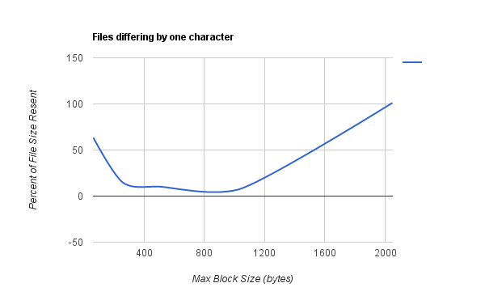
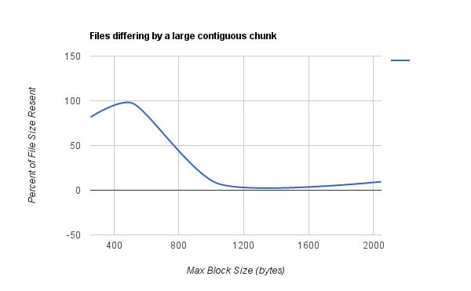
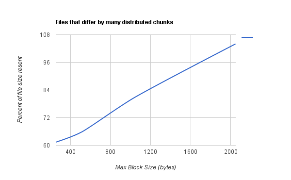
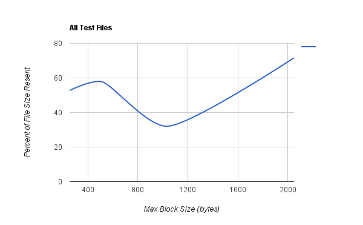

Fingerprinting Statistics
Pairs of files were generated that differ in the following ways:

For files differing by one byte, a balance has to be struck between several small block headers being sent and the size of the retransmitted block(s). At most one block will be retransmitted due to the small difference between files. An optimal block size was found around 1000 bytes.

For files differing by a large contiguous chunk a minimum wasfound around 1400 bytes.

For files differing by a large number of chunks distributed through the file, smaller max block sizes were generally found to be better.

Taking the average of all these files, it was found that a minimal amount was resent around a maximum block size of 1KB. As a result, the maximum value chosen was 1024 bytes, with an expected max size of 512 bytes.
Raw Data
| File Pair | Number of resent blocks | Max Block size | Max expected size | Resent size (without header) | Change in file size (bytes) | Headers Sent Second time | Total Sent second time | File Size | % of file sent |
|---|---|---|---|---|---|---|---|---|---|
| Haskell | 1 | 64 | 32 | 59 | 1 | 159 | 2126 | 3357 | 63.33035448 |
| Haskell | 1 | 256 | 128 | 120 | 1 | 30 | 510 | 3357 | 15.19213584 |
| Haskell | 1 | 512 | 256 | 120 | 1 | 17 | 341 | 3357 | 10.15787906 |
| Haskell | 1 | 1024 | 512 | 120 | 1 | 9 | 237 | 3357 | 7.059874888 |
| Haskell | 2 | 2048 | 1024 | 3357 | 1 | 3 | 3396 | 3357 | 101.1617516 |
| HTML | 2 | 256 | 128 | 286 | -3573 | 189 | 2743 | 3357 | 81.70985999 |
| HTML | 5 | 512 | 256 | 2050 | -3573 | 94 | 3272 | 3357 | 97.46797736 |
| HTML | 3 | 1024 | 512 | 2562 | -3573 | 51 | 3225 | 37088 | 8.695534944 |
| HTML | 2 | 2048 | 1024 | 3198 | -3573 | 26 | 3536 | 37088 | 9.534081104 |
| C | 23 | 512 | 256 | 6649 | -316 | 45 | 7234 | 11000 | 65.76363636 |
| C | 16 | 1024 | 512 | 8486 | -316 | 27 | 8837 | 11000 | 80.33636364 |
| C | 8 | 2048 | 1024 | 11296 | -316 | 11 | 11439 | 11000 | 103.9909091 |
| C | 31 | 256 | 128 | 5791 | -316 | 74 | 6753 | 11000 | 61.39090909 |